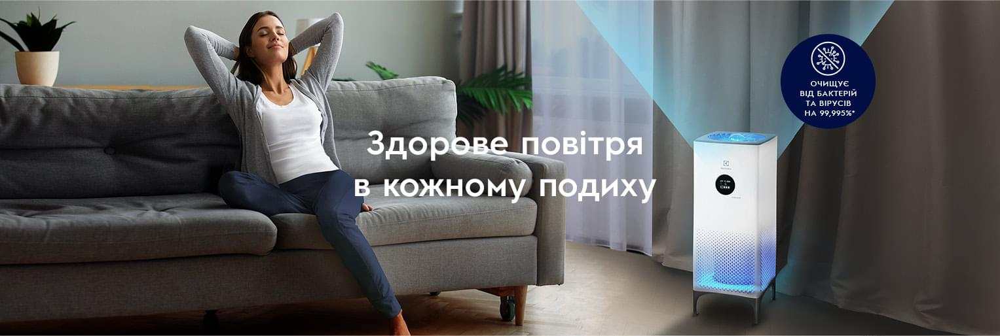
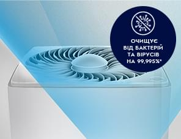
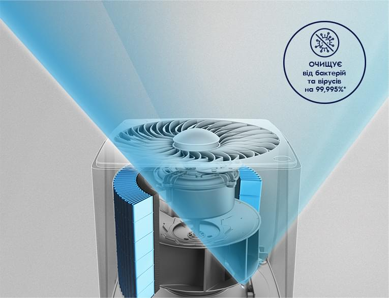
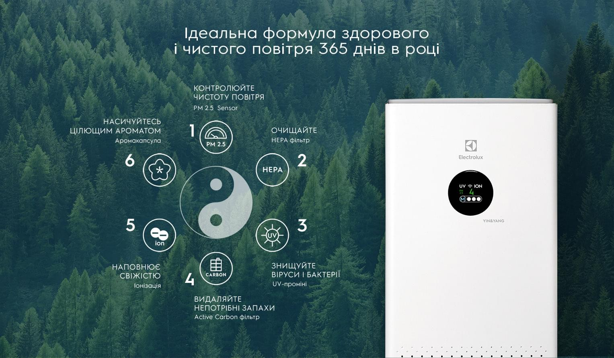

Здорове повітря в годному подиху

Довірте ідеальне повітря Electrolux
Інноваційні рішення, роблять очищувачі повітря Electrolux максимально ефективними помічниками для створення комфортного і здорового середовища в будинку цілий рік.
Чисте повітря
для життя

10 000 літрів повітря на добу проходить через наші легені, але разом з ним в наш організм потрапляють дрібні частинки пилу, продукти вихлопу від автомобілів, алергени і небезпечні мікрочастинки PM2.5. На вулицях великих міст повітря забруднене, а побутова вентиляція і провітрювання не роблять його чистішим. Electrolux пропонує рішення, за допомогою яких ви створите для себе і близьких здорову атмосферу.
Повітря без вірусів
і бактерій

Захист себе і оточуючих від хвороботворних мікроорганізмів стає невід'ємною частиною звичного життя. Джерелом інфекції може бути не тільки хворий, але і безсимптомний носій. Багаторівневе очищення і знезараження повітря УФ-променями захистить вас і ваших близьких від негативного впливу довкілля день за днем.
Розумний очищувач повітря Yin&Yang знає, як
зробити повітря чистим

Автоматичні і індивідуальні режими в очищувачі Yin&Yang дозволяють створити правильні умови і здоровий мікроклімат в будинку. Оснащений датчиком виявлення частинок РМ 2.5 прилад веде безперервний моніторинг якості повітря в приміщенні і при необхідності запускає ефективний режим очищення від небезпечних невидимих частинок, вірусів, алергенів і бактерій.

Ефективний захист від вірусів,
алергенів і бактерій
Багаторівнева система очищення і знезараження повітря 360°ROUND CLEAN допомагає захищати імунітет протягом усього року:
- Pre-filter очищає повітря від великих фрагментів пилу і забруднювачів.
- Round HEPA затримує дрібний пил, реагенти, алергени і самі найдрібніші частинки PM 2.5.
- УФ-промені знезаражують повітря, знищуючи шкідливі віруси і бактерії.
- Іонізатор освіжає повітря і насичує негативними іонами для підтримки тонусу.

Абсолютний контроль якості повітря
для Вашого здоров'я
Очищувач повітря Yin&Yang знає, як зробити повітря чистим.
Автоматичні і індивідуальні режими дозволяють швидко створити правильні умови для здорового життя:
- Датчик РМ2.5 веде безперервний моніторинг повітря в приміщенні і, при необхідності, запускає ефективний режим для швидкого очищення повітря від небезпечних невидимих частинок, вірусів, алергенів і бактерій.
- Колірна індикація на дисплеї інформує про стан повітря в режимі реального часу.

Режими для активного дня
і комфортного сну
Широкий вибір режимів і налаштувань забезпечить кращий комфорт і налаштовується під всі потреби в будинку:
- Автоматичний режим забезпечує контроль і ефективну очистку вдень і ввечері.
- Нічний режим допомагає ефективно відновити сили і добре виспатися вночі.
- Внутрішня підсвітка приладу створить настрій для вашого комфортного відпочинку і релаксації.
- Аромакапсула насичує повітря ароматами цілющих ефірних масел для гармонії і підтримки імунітету.
- Потужний DC мотор однаково легко забезпечує економічну і безшумну роботу вночі і супер потужний режим очищення у випадку необхідності.
Ідеальна формула здорового і чистого повітря 365 днів в році

On-line управління і контроль через мобільний додаток по Wi-Fi
Управляти мікрокліматом можна з будь-якої точки світу за допомогою мобільного пристрою. Завантажте для цього спеціальний додаток і встановіть з'єднання з Wi-Fi. Користуйтеся сучасними технологіями для турботи про себе і близьких.